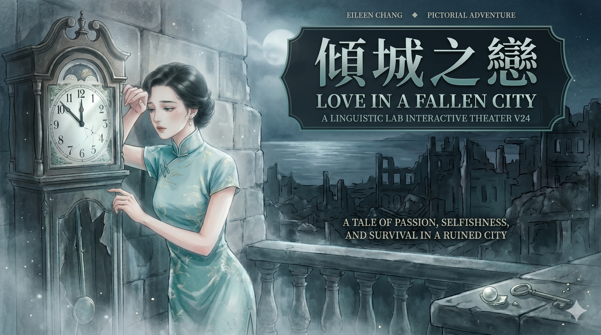
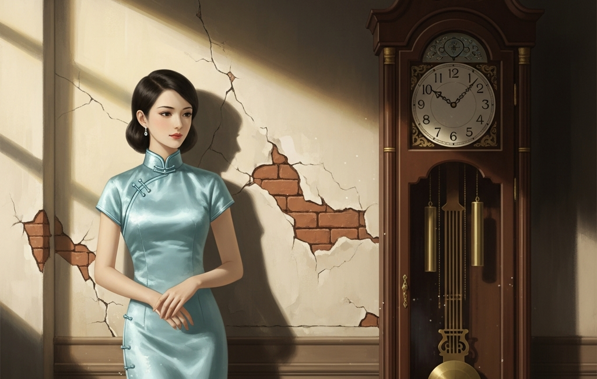
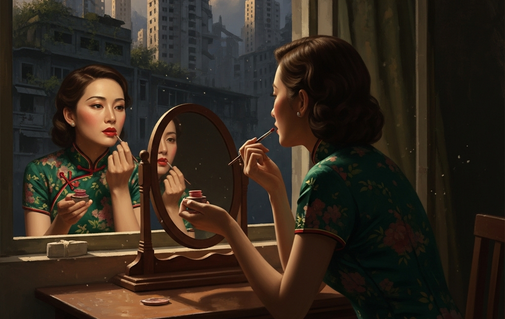
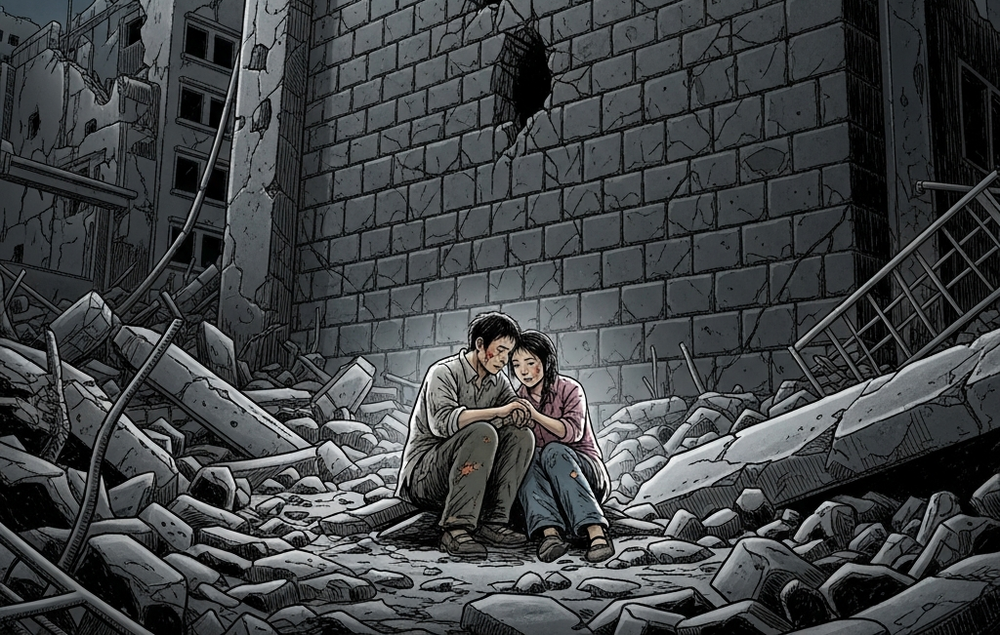
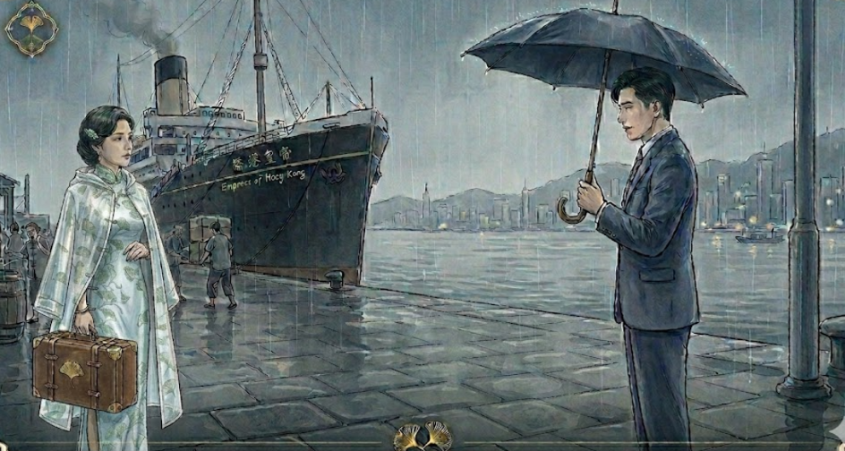
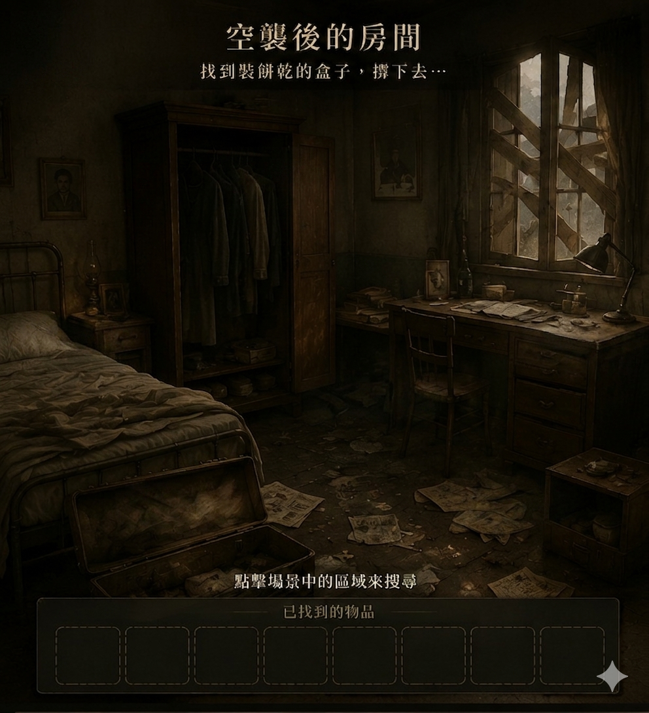
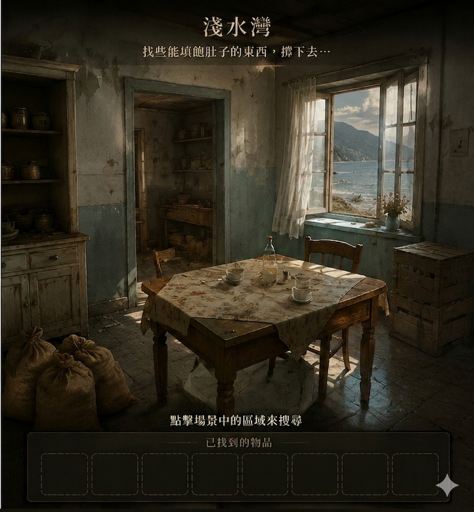
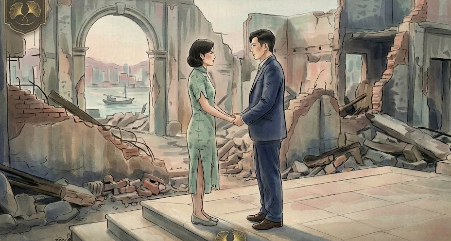

互動式閱讀解謎闖關遊戲
遊戲設計 / 汪檍
稱謂會出現在遊戲頁與最後破關證書中。
維修檢查點
請輸入維修密碼。
第一關：白公館的凝滯

第一關
白公館的凝滯
回到白公館的停滯時間。你要從鐘面、電報與家族話語裡，讀出白流蘇被困住的位置。
第二關
相親與博弈
在相親、天秤與圓舞裡，辨認家族如何估價女性，也辨認流蘇如何把困境變成可用的棋步。
第三關
淺水灣心理戰
話語拉鋸、真假身份與沙灘上的靠近退縮，都不是浪漫裝飾，而是權力與身體界線的試探。

第四關
你窗裡的月亮
回原文找到電話裡的古詩暗線，接通電話，對齊兩扇窗中的月亮；最後在賭局裡判斷流蘇如何守住自己。

第五關
斷瓦頹垣下的許諾
你帶著前四關留下的物件抵達碼頭。先在碼頭完成物件交付；接著進入空襲、淺水灣與殘破家中燒飯的生存考驗。
找出白家那種「與世界脫節」的時間。
破碎的電報：拼湊真相
白公館的齒冷爭吵
點選卡牌，找出對應的爭吵話語。
鏡中的真實面目
用左右鍵切換特徵，拼出原文中的流蘇。
偏見的天秤
點選下方物件進行分配，點選天秤內的物件可收回。所有物件都必須分配完，且寶絡／流蘇兩邊都要完全正確才算過關。
流蘇的博弈：那一曲圓舞
身後的冷語如箭，請找出那個最終的控訴。
淺水灣心理戰
每一句對白都是一種試探。請點選卡牌判斷性質。
薩黑荑妮檔案驗證系統
點選物件「查看調查詳情」，再次點選即可「選取」。選取後點擊下方欄位分配。
最後驗證：薩黑荑妮的「公主」身分，真正靠什麼成立？
請根據檔案判斷。真正血統與官方文件都無法證明；能讓她在社交場上成立的，是被相信與被男人認證。
解析結果：白流蘇身分分析
身份可信度：78%
社交認可度：92%
真實可驗證度：13%
「在這個世界裡，被相信，有時比真實更重要。」
沙灘上的硃砂痣
拍打擾人的曖昧... 蚊子越打，兩人越靠近。
「范柳原俯下身子，拍打著白流蘇的腳踝。」
這海灘上的小蟲並非普通的蚊子，它們的名字是？
4-1 電話古詩
電話那端忽然引用了一段古詩。請先回原文找到它，再回到字海裡尋找暗線。
依照原文中的語序，在亂世字海中連續點選對應的文字暗線。當暗線全部對上，電話盤才會出現；撥號後，才能進入下一段通話。
已尋獲文字：0
撥打暗號
輸入你從原文詩句暗線中解出的電話暗號。撥通後，才會進入月亮電話。
4-2 月亮電話：同一輪月亮
「流蘇，你的窗子裡看得見月亮麼？」
真正的謎題不是說出愛，而是先拿起聽筒，避免鈴聲吵醒隔壁的余太太，再調整兩邊窗簾，讓兩個房間短暫看見同一輪月亮。
- 第一步：先按「接起電話」。原文裡鈴聲太響，流蘇怕吵醒隔壁的余太太，所以不能先去拉窗簾。
- 接起電話後，再回到原文讀「你的窗子裡看得見月亮麼」這一句：重點不是把月亮打開到最大，而是讓兩邊都看見同一輪月亮。
- 流蘇這邊的月亮要從淚眼裡顯得模糊；柳原那邊的月亮會被藤花遮住一角。兩邊要相近，但不可能完整。
- 操作時不要一直說話。這段通話靠沉默維持，太急著說破會讓關係失衡。
- 若系統提示太吵、太冷、太滿，請回原文判斷：她是在害怕被聽見，還是在害怕感情越線。
流蘇的房間
淚眼中的月亮，大而模糊，銀色，有著綠的光棱。
柳原的房間
窗子上吊下一枝藤花，擋住了一半。也就是玫瑰，也許不是。
正確範圍已縮小：要足夠安靜，但不是死寂。
正確範圍已縮小：要忍住情感，不能太冷也不能太滿。
電話鈴還在響。先接起電話，不然余太太會被吵醒。
4-3 議和條件：賭局談判
目標不是得到愛情，而是在極不對等的局勢裡守住最後一點主導權。
賭桌籌碼
上海流言、香港社交圈、白家觀感會一起把流蘇推向角落。
先選 1–5 枚籌碼，再把籌碼押到一個選項上；下注越多，旁邊參數變化越大。
賭桌翻空
名聲崩壞，安全降低，金錢所剩無幾。可是主導權回升了。
碼頭重逢

藥物狀態：
尚未組合。請先在圖上點選「藥」與「藥罐」。
已交付物件：
碼頭風很大。先將「藥」與「藥罐」組合，再把組合後的藥、船票、電報交給柳原。
5-2 空襲之後：撐下去
柳原前往英國後，香港發生空襲。流蘇要先在空襲後的房間翻找多樣物件，讓自己撐下去；接著到淺水灣逐一蒐集物資，依原文選出能分給兩人的食物。
空襲後的房間物資翻找

已翻找物件：
尚未翻找
從房間物資中選出真正能撐下去的物品：
淺水灣物資搜索

已蒐集物資：
尚未蒐集
選給兩人的食物：
5-2 自淺水灣再回到巴丙頓家
可互動物件：食譜
食譜裡藏著菜名與做法。先從原文確認三道菜，再回到食譜判斷食材。不要把其他菜的食材混進來。
食材選擇
三道菜名
馬來菜 油炸沙袋 咖哩魚
5-3 薩黑荑妮的料理
請從原文中找出這道菜的做法。薩黑荑妮想向流蘇學做一道菜，請選出正確的烹調方式、食材與食品樣態，完成食品製作。
可互動物件：食譜
食譜沒有提示文字，只有菜名與做法。玩家要回到原文，讀出薩黑荑妮想學的那一道菜。
製作食品配對
請分別選出烹調方式、主要食材與最後樣態。
烹調方式
主要食材
食品樣態
5-3 清蒸小蠔湯：親手完成烹煮
請依正確烹煮順序點亮圖片
告別薩黑荑妮公主
完成清蒸蠔湯後，這場寒苦的相聚成了薩黑荑妮公主最後一次來訪。
死生契闊與子相悅

蘇站在門檻上，柳原立在她身後，把手掌合在她的手掌上，笑道："我說，我們幾時結婚呢？"流蘇聽了，一句話也沒有，只低下了頭，落下淚來。柳原拉住她的手道："來來，我們今天就到報館里去登報啟事，不過你也許願意候些時，等我們回到上海，大張旗鼓的排場一下，請請親戚們。"
在破關之前，讓這句古詩暗號回到流蘇與柳原的結局。